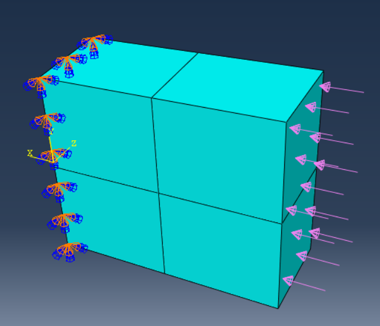
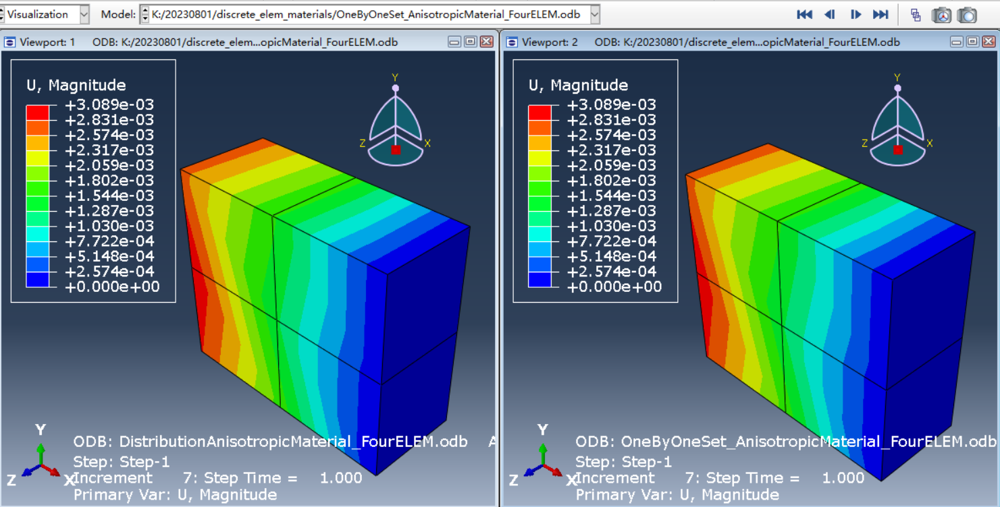

Abaqus材料非均匀分布定义
设想一种情况:在有限元分析中,一个区域或者整个网格中,每个单元的材料行为都是单独的。这时在ABAQUS中应该如何设置?
两种办法：
- 给每个单元创建一个集合,然后一一赋予SECTION.
- 使用*Distribution关键字,实现空间分布的材料行为,再将SECTION属性赋予给单元。这一种方法好处是,减少后处理的压力,没有那么多的SET和SECTION
两种方法对比：
- 第一种方法可以在CAE界面中手动设置,也可以用Python脚本自动设置,但是一旦单元数量过多,就会导致CAE界面卡顿,且Python速度也不是很快。电脑性能不行的话,后处理压力比较大,因为有很多的Set,Section.
- 第二种方法,不支持CAE,只能修改INP文件实现。优点是后处理软件压力小点,没有那么多set
下面以下面的四个实体单元为例子,分别使用两种方法,直接编写INP文件,命令行中提交计算,进行静态分析

方法一
*Heading
*Preprint, echo=NO, model=NO, history=NO, contact=NO
*Part, name=FourElem
*Node
1, -25., -11.25, 10.
2, -25., -0.625, 10.
3, -25., 10., 10.
4, -25., -11.25, 0.
5, -25., -0.625, 0.
6, -25., 10., 0.
7, -12.5, -11.25, 10.
8, -12.5, -0.625, 10.
9, -12.5, 10., 10.
10, -12.5, -11.25, 0.
11, -12.5, -0.625, 0.
12, -12.5, 10., 0.
13, 0., -11.25, 10.
14, 0., -0.625, 10.
15, 0., 10., 10.
16, 0., -11.25, 0.
17, 0., -0.625, 0.
18, 0., 10., 0.
*Element, type=C3D8R
1, 7, 8, 11, 10, 1, 2, 5, 4
2, 8, 9, 12, 11, 2, 3, 6, 5
3, 13, 14, 17, 16, 7, 8, 11, 10
4, 14, 15, 18, 17, 8, 9, 12, 11
*Elset, elset=E1
1
*Elset,elset=E2
2
*Elset,elset=E3
3
*Elset,elset=E4
4
Gobal orien
*Orientation, name=Ori-1
1., 0., 0., 0., 1., 0.
1, 0.
Section Assign
*Solid Section,Elset=E1,Material=M1,Orientation=Ori-1
*Solid Section,Elset=E2,Material=M2,Orientation=Ori-1
*Solid Section,Elset=E3,Material=M3,Orientation=Ori-1
*Solid Section,Elset=E4,Material=M4,Orientation=Ori-1
*End Part
*Assembly, name=Assembly
*Instance, name=FourElem-1, part=FourElem
*End Instance
*Nset, nset=Set-1, instance=FourElem-1, generate
13, 18, 1
*Elset, elset=Set-1, instance=FourElem-1
3, 4
*Elset, elset=_Surf-1_S2, internal, instance=FourElem-1
1, 2
*Surface, type=ELEMENT, name=Surf-1
_Surf-1_S2, S2
*End Assembly
*Material,Name=M1
*Elastic,TYPE=ANISOTROPIC
8929.4608,1526.5216,8923.6134,3635.3632,3476.3026,120679.2644,8.3944,7.7689,
439.6758,3701.6801,-145.4016,-135.4002,-7614.9276,-29.5989,4212.6626,-122.1556,
-112.4105,-6361.0837,-24.5995,433.279,4055.9163
*Material,Name=M2
*Elastic,TYPE=ANISOTROPIC
17550.0133,13611.2277,25852.2543,13021.7401,17628.6822,24242.5311,9788.8481,13699.1544,
13033.5732,14762.1216,-9538.4395,-13349.2807,-12699.5968,-10779.3782,14203.3879,-11372.6959,
-15914.7528,-15140.8525,-12851.6274,12522.8552,18629.8078
*Material,Name=M3
*Elastic,TYPE=ANISOTROPIC
8929.8392,1529.3591,8928.7933,3642.9557,3613.164,120481.7162,9.95,9.8574,
517.3742,3702.3839,-147.4303,-146.0569,-7669.087,-35.2767,4222.4903,-143.1982,
-141.2357,-7414.3551,-34.4302,509.844,4193.1319
*Material,Name=M4
*Elastic,TYPE=ANISOTROPIC
9058.1198,1940.0409,10089.9165,5393.1754,11874.9043,98667.1446,203.4878,541.258,
4678.4804,3943.7999,639.8814,1702.0259,14711.8024,766.6464,6110.7723,1221.6736,
3249.5219,28087.9378,1463.6933,4602.6886,12487.
*Step, name=Step-1, nlgeom=YES
*Static
0.1, 1., 1e-05, 0.2
*Boundary
Set-1, ENCASTRE
*Dsload
Surf-1, P, 1.
*Restart, write, frequency=0
*Output, field
*Node Output
U,
*Element Output, directions=YES
S,
*Output, history, variable=PRESELECT
*End Step方法二
*Heading
JOB:DistributionAnisotropicMaterial_FourELEM
*Preprint, echo=NO, model=NO, history=NO, contact=NO
*Part, name=FourElem
*Node
1, -25., -11.25, 10.
2, -25., -0.625, 10.
3, -25., 10., 10.
4, -25., -11.25, 0.
5, -25., -0.625, 0.
6, -25., 10., 0.
7, -12.5, -11.25, 10.
8, -12.5, -0.625, 10.
9, -12.5, 10., 10.
10, -12.5, -11.25, 0.
11, -12.5, -0.625, 0.
12, -12.5, 10., 0.
13, 0., -11.25, 10.
14, 0., -0.625, 10.
15, 0., 10., 10.
16, 0., -11.25, 0.
17, 0., -0.625, 0.
18, 0., 10., 0.
*Element, type=C3D8R
1, 7, 8, 11, 10, 1, 2, 5, 4
2, 8, 9, 12, 11, 2, 3, 6, 5
3, 13, 14, 17, 16, 7, 8, 11, 10
4, 14, 15, 18, 17, 8, 9, 12, 11
*Elset, elset=E1
1,2,3,4
*Orientation, name=Ori-1
1., 0., 0., 0., 1., 0.
1, 0.
*Solid Section,Elset=E1,Material=M1,Orientation=Ori-1
*End Part
*Assembly, name=Assembly
*Instance, name=FourElem-1, part=FourElem
*Distribution,Name=dist1,LOCATION=ELEMENT,TABLE=tab1
,8929.4608,1526.5216,8923.6134,3635.3632,3476.3026,120679.2644,8.3944
7.7689,439.6758,3701.6801,-145.4016,-135.4002,-7614.9276,-29.5989,4212.6626
-122.1556,-112.4105,-6361.0837,-24.5995,433.279,4055.9163
1,8929.4608,1526.5216,8923.6134,3635.3632,3476.3026,120679.2644,8.3944
7.7689,439.6758,3701.6801,-145.4016,-135.4002,-7614.9276,-29.5989,4212.6626
-122.1556,-112.4105,-6361.0837,-24.5995,433.279,4055.9163
2,17550.0133,13611.2277,25852.2543,13021.7401,17628.6822,24242.5311,9788.8481
13699.1544,13033.5732,14762.1216,-9538.4395,-13349.2807,-12699.5968,-10779.3782,14203.3879
-11372.6959,-15914.7528,-15140.8525,-12851.6274,12522.8552,18629.8078
3,8929.8392,1529.3591,8928.7933,3642.9557,3613.164,120481.7162,9.95,
9.8574,517.3742,3702.3839,-147.4303,-146.0569,-7669.087,-35.2767,4222.4903
-143.1982,-141.2357,-7414.3551,-34.4302,509.844,4193.1319
4,9058.1198,1940.0409,10089.9165,5393.1754,11874.9043,98667.1446,203.4878,
541.258,4678.4804,3943.7999,639.8814,1702.0259,14711.8024,766.6464,6110.7723,
1221.6736,3249.5219,28087.9378,1463.6933,4602.6886,12487.
*End Instance
*Nset, nset=Set-1, instance=FourElem-1, generate
13, 18, 1
*Elset, elset=Set-1, instance=FourElem-1
3, 4
*Elset, elset=_Surf-1_S2, internal, instance=FourElem-1
1, 2
*Surface, type=ELEMENT, name=Surf-1
_Surf-1_S2, S2
*End Assembly
*Distribution Table,Name=tab1
MODULUS , MODULUS , MODULUS , MODULUS , MODULUS , MODULUS , MODULUS
MODULUS , MODULUS , MODULUS , MODULUS , MODULUS , MODULUS , MODULUS, MODULUS
MODULUS , MODULUS , MODULUS , MODULUS , MODULUS , MODULUS
*Material,Name=M1
*Elastic,TYPE=ANISOTROPIC
FourElem-1.dist1
*Step, name=Step-1, nlgeom=YES
*Static
0.1, 1., 1e-05, 0.2
*Boundary
Set-1, ENCASTRE
*Dsload
Surf-1, P, 1.
*Restart, write, frequency=0
*Output, field
*Node Output
U,
*Element Output, directions=YES
S,
*Output, history, variable=PRESELECT
*End Step结果对比
结果一致
